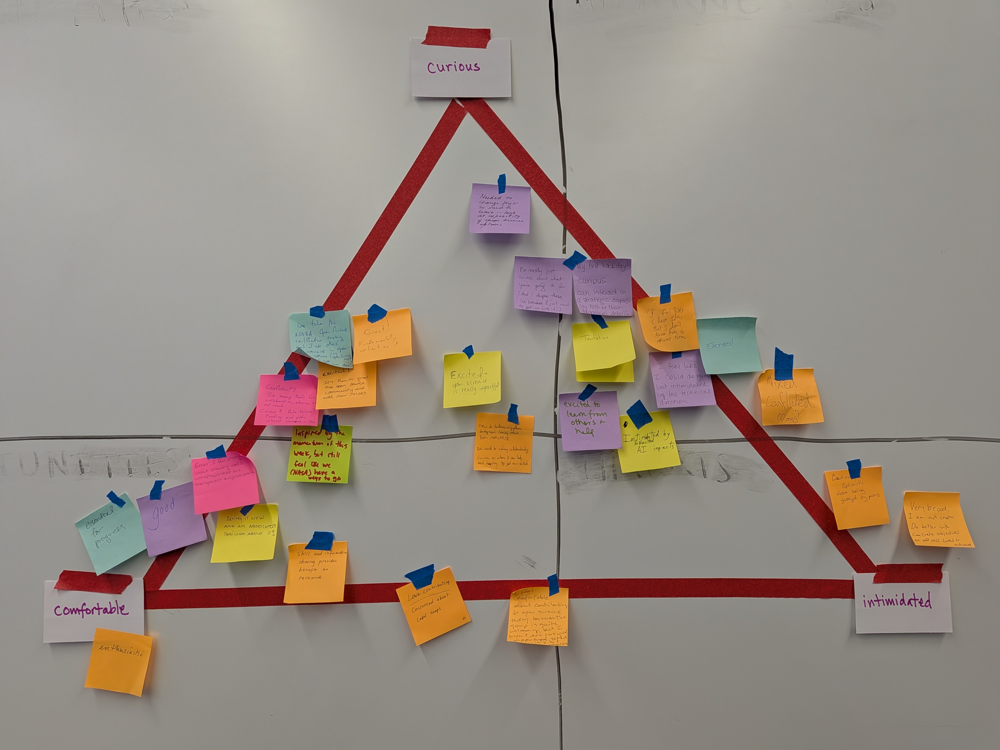

Welcoming new open source contributors at NASA at the UWG Summit!
Amy Steiker ![]()
Danny Kaufman
Michele Thornton
Rupesh Shrestha
Andy Barrett
Stefanie Butland
Ronny Hernández Mora
Julie Lowndes
This is a short post about the Hackday we held at NASA User Working Group (UWG) Summit, on the heels of the Hackday we led at the 2026 July Meeting! We were able to reuse our planning and coordinating process and infrastructure, but adapt for a different audience (scientists and support staff from all of the NASA Earthdata DAACs), goals, and time constraints. The goal here was to gather anyone who’s attending the UWG Summit or from on-site at Goddard, and hack on “contributing to open science to make things easier for scientists” from policy, social and technical perspectives.
Quicklinks:
Cross-posted at https://openscapes.org/blog, https://nasa-openscapes.github.io/news, and https://nmfs-openscapes.github.io/blog
“Thank you for putting together that experience for us, and for everything you are doing for our community.” - Adrian Borsa, Faculty at UC San Diego and ASF UWG Member.
The NASA Openscapes Mentors led a Hackday on Aug 20 2026 on the final day of the NASA User Working Group (UWG) Summit at the NASA Goddard Space Flight Center in Greenbelt, Maryland. The theme was “Contributing to open science to make things easier for scientists”. “Hackday” to our NASA Openscapes and earthaccess communities means we will be collaboratively problem-solving and strategizing, and translating ideas into action. This includes decisions, code, and documentation. The Hackday was led in person by Amy Steiker (NSIDC), Danny Kaufman (ASDC), and Julie Lowndes (Openscapes). It was produced additionally by Andy Barrett, Stef Butland, and Ronny Hernandez Mora.
What we did: We had a short welcome about the plan (slides), and an icebreaker where everyone put sticky notes on the wall to get a sense of “how are you feeling about contributing to open science today”: comfortable, curious, intimidated. Amy Steiker led a great Showcase of earthaccess: how to use and contribute. Her code demo produced an error – something that would benefit by an improved error message. Folks were engaged – before Amy could even do the second part of the planned demo “let’s make a github issue together to suggest this improvement”, the audience was suggesting fixes from their experiences. This demo and energy then translated well for the breakout sessions: people chose between 3 topics to spend 1 hour before lunch and additional time as flights allowed. Topics are listed here, along with links to what each group accomplished – links to their contributions to open science:
- Contribute as a newer user - Amy Steiker
- Contribute as a more seasoned user - Danny Kaufman
- Tutorial credential issue
- Discussing GitHub Actions test suites to triage and evaluate AI contributions
- Discussion about Windows testing
- Tutorial credential issue
- Contribute to open source ecosystem (not earthaccess specific) - Julie Lowndes
- Please add installation info on earthaccess home page
- We worked in a sandbox repo and used the GitHub Clinic to learn commits, markdown, and creating a website with gh-pages. (Walt, Lisa)
- Then we practiced pull requests and forking a Quarto book tutorial to contribute to open science documentation (Walt, Lisa)
- Please add installation info on earthaccess home page

There is such value in hackdays / hackweeks / co-creation time in general! We are thrilled with how much people accomplished, and how eager they were to contribute when welcomed and supported to take their next steps. We were able to lead this together with light planning because we are comfortable and have open and synchronous/asynchronous systems of working together, and this kind of ongoing investment in teams is important to make them happen.
Citation
@online{steiker2026,
author = {Steiker, Amy and Kaufman, Danny and Thornton, Michele and
Shrestha, Rupesh and Barrett, Andy and Butland, Stefanie and
Hernández Mora, Ronny and Lowndes, Julie},
title = {Welcoming New Open Source Contributors at {NASA} at the {UWG}
{Summit!}},
date = {2026-09-04},
url = {https://openscapes.org/blog/2026-09-04_uwg_openscapes_hackday/},
langid = {en}
}